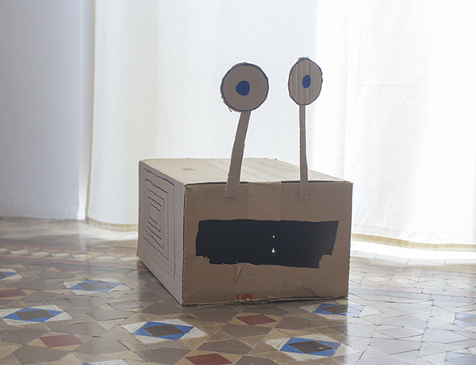
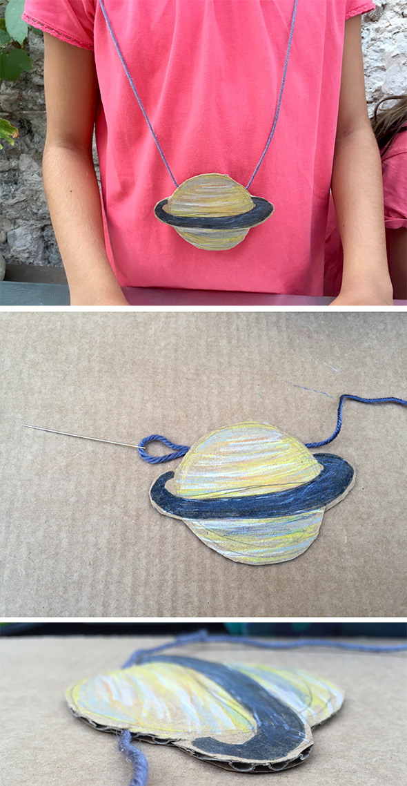
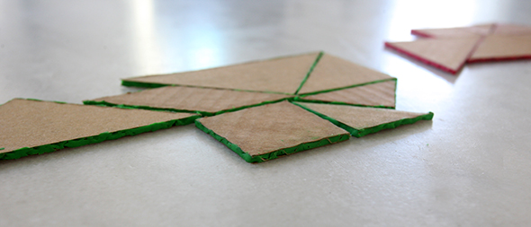
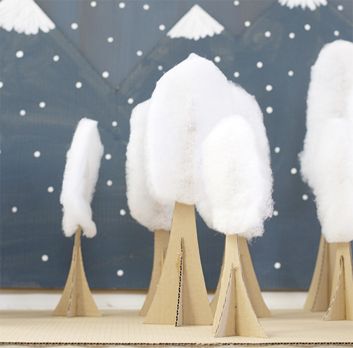
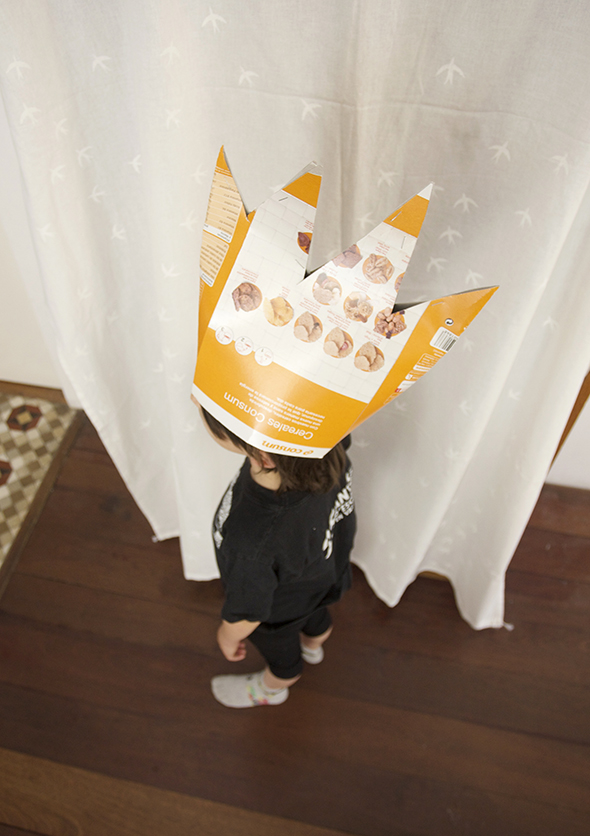
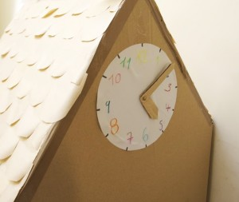
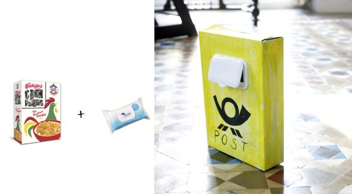

Pinterest
Instagram
ES
EN
DE
☰ Menü
Home
Das Haus
Zubehör
Dekoration
Faltanleitung
Illustration
Trinkflaschen
Bastelheft
App
Blog
Feste
Weihnachten
Ostern
Halloween
Fasching & Kostüme
Valentinstag
Geburtstag
Mutter-/Vatertag
Schulanfang
Jahreszeiten
Frühling
Sommer
Herbst
Winter
Was machen
Spielzeug
Spiele
Druckvorlagen
Essen & Rezepte
Dekoration
Malen
Experimente
Draußen
Lernen
Tiere
Geschenke & Schmuck
Bauen & Tricks
Weitere Ideen
Material
Papier
Karton
Papierrollen
Recycling
Steine
Blätter & Natur
Stoff & Nähen
Start
›
Blog
›
Karton
Karton
Kategorie
Aktivität
Panda mit Relief für die Wand
Aktivität
Verzierte Anfangsbuchstaben
Material
Monster aus einem Karton

Aktivität
Kartonwald für Playmobil
Material
X-Wing aus Karton für Lego
Aktivität
Star-Wars-Raumschiffe aus Karton
Material
5 Projekte zum Kosmos

Material
Einfache Piñata
Spielzeug
Ein kühles Plätzchen
Formen
Tangram aus Pappe und Knete

Karton
Winterbäume fürs Puppenhaus

Material
Transportbox für einen Drachen
Material
Hut aus einer Cornflakes-Schachtel

Konstruieren
Naturdeko
Konstruieren
Karton-Raumschiff für Lego
Material
Flugzeug aus einem Karton
Material
Das Häuschen: Detail 3

Aktivität
Im Bau
Aktivität
Briefkasten aus Cornflakes-Karton

Aktivität
Hampelmann aus Pappe
Material
Hausordner aus Cornflakes-Schachteln
Aktivität
Ein Tag mit dem Zug
Aktivität
Murmellabyrinth
Aktivität
Magnetspielzeug als Auftragsarbeit
Seite 1 / 3
Ältere →